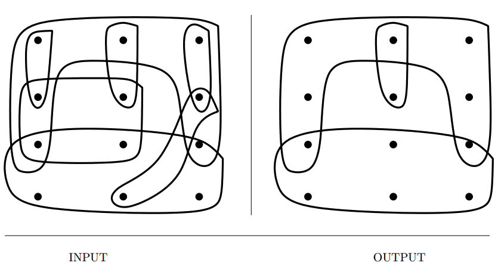
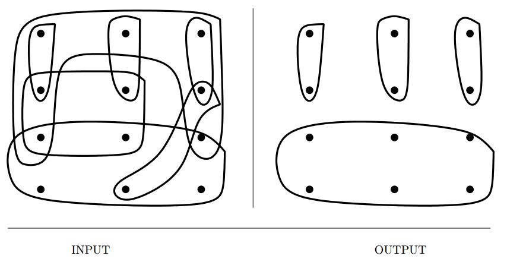
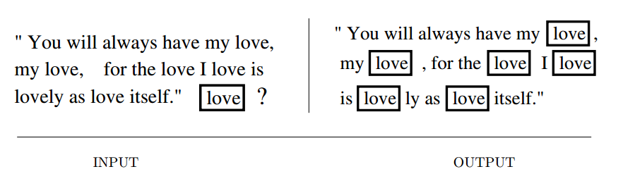
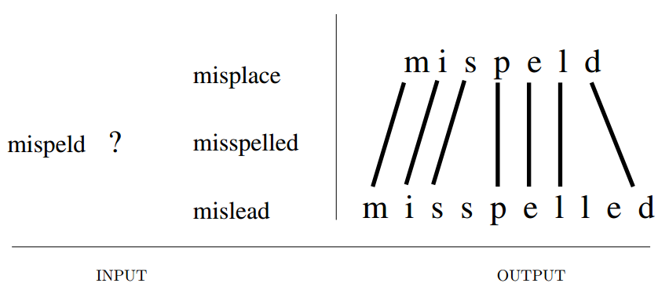
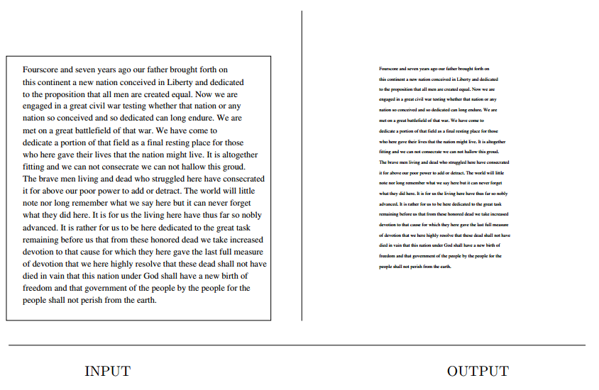
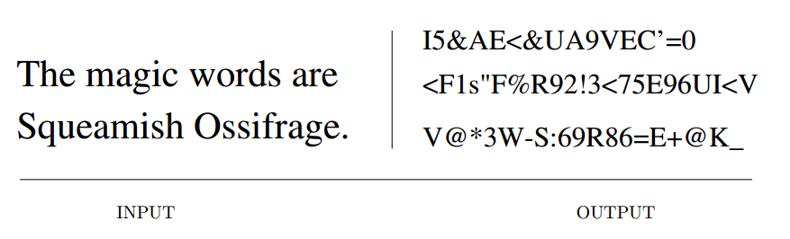
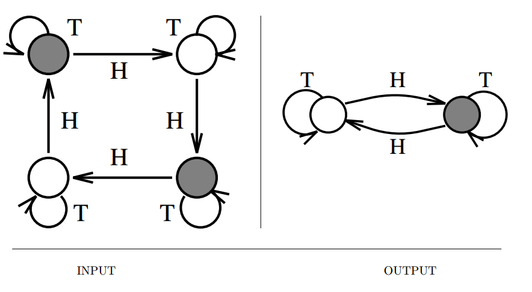
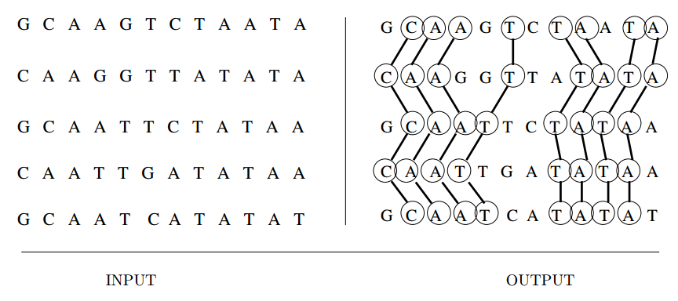
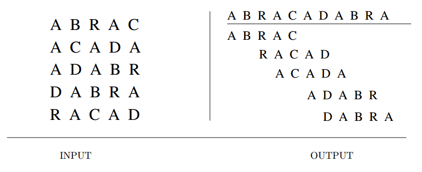

Set and String Problems
Set Cover

Input description: A collection of subsets $S = {S_1, \ldots , S_m}$ of the universal set
$U = {1, \ldots , n}$.
Problem description: What is the smallest subset $T$ of $S$ whose union equals
the universal set—i.e. , $ \cup_{i=1}^{|T|} T_i = U$?
- Several variations of set problem,
- Are you allowed to cover elements more than once? Distinction between set cover and set packing.
- Are your sets derived from the edges or vertices of a graph? Can be modeled as vertex cover instead.
- Do your subsets contain only two elements each? You are in luck. Becomes NP-complete with three variables.
- Do you want to cover elements with sets, or sets with elements
- Greedy is the most natural and effective heuristic for set cover.
- Simulated annealing is likely to produce somewhat better set covers.
- Backtracking can be used to guarantee an optimal solution, but is computationally very expensive.
- Alternative, integer programming formulation of set cover.
- Related : Matching, vertex cover, set packing
Set Packing

Input description: A set of subsets $S = {S_1, \ldots , S_m}$ of the universal set $U =
{1, \ldots , n}$.
Problem description: Select (an ideally small) collection of mutually disjoint subsets from $S$ whose union is the universal set.
- Must every element appear in exactly one selected subset? This will be NP-complete is yes.
- Does each element have its own singleton set?
- What is the penalty for covering elements twice?
- The same heuristics as in set cover work here.
- Related : Independent set, set cover
String Matching

Input description: A text string $t$ of length $n$. A pattern string $p$ of length $m$.
Problem description: Find the first (or all) instances of pattern $p$ in the text.
- Arises in almost all text-processing applications.
- Issues to look for,
- Are your search patterns and/or texts short? Simple $O(mn)$ would suffice.
- What about longer texts and patterns? Preprocessing the search pattern can help improve the jumps on finding a mismatch.
- Do I expect to find the pattern or not? Check backwards and perform better jumps.
- Will you perform multiple queries on the same text? Use suffix trees or suffix arrays.
- Will you search many texts using the same patterns? Build finite automaton. Also useful when searching for regular expressions.
- What if our text or pattern contains a spelling error? Use Approximate string matching algorithms.
- Implementations : Strmat, grep and variants, Boost string algorithms.
- Related : Suffix trees, approximate string matching
Approximate String Matching

Input description: A text string $t$ and a pattern string $p$.
Problem description: What is the minimum-cost way to transform $t$ to $p$ using insertions, deletions, and substitutions?
- A fundamental problem because we live in an error-prone world.
- Dynamic programming provides the basic approach. $D[i,j]$ = cost of editing $i$ characters of string $p$ into first $j$ characters of text $t$. The recurrence selected the minimum of,
- if $p_i = t_j$ then $D[i-1, j-1]$ else $D[i-1, j-1] +$ substitution cost.
- $D[i-1, j] +$ deletion cost of $p_j$.
- $D[i, j+1] +$ deletion cost of $t_j$.
- Several issues remain however,
- Do I match the pattern against the full text, or against a substring?
- How should I select the substitution and insertion/deletion costs?
- How do I find the actual alignment of the strings?
- What if the two strings are very similar to each other?
- Is your pattern short or long? You can use bit-parallel algorithms, which can be many times faster than dynamic programming.
- How can I minimize the required storage? Quadratic space required by dp table is only required if you need to reconstruct the actual sequence alignment.
- Should I score long runs of indels differently?
- Does similarity mean strings that sound alike?
- Implementations : agrep, nrgrep, TRE
- Related : String matching, longest common substring
Text Compression

Input description: A text string $S$.
Problem description: Create a shorter text string $S'$ such that $S$ can be correctly reconstructed from $S'$.
- Decreasing secondary storage prices seem to have increased interest in data compression, because there is more data to compress.
- Several questions arise while selecting the right compression algorithm,
- Must we recover the exact input text after compression? Lossy vs Lossless encoding. Documents can’t use lossy compression. Images/videos can.
- Can I simplify my data before I compress it? Any information that can be removed would help in compression later.
- Does it matter whether the algorithm is patented? Just something to look out for.
- How do I compress image data? Use JPEG.
- Must compression run in real time? Depends on the application.
- Several dozen algorithms are available,
- Huffman codes, greedy variable length encoding based on frequency.
- Lempel-ziv algorithms (LZV compression), just use this.
- Implementations : gzip, bzip2
- Related : Shortest common superstring, cryptography
Cryptography

Input description: A plaintext message $T$ or encrypted text $E$, and a key $k$.
Problem description: Encode $T$ (decode $E$) using $k$ giving $E$ ($T$).
- Foundation for the modern internet.
- Three classes of cryptosystems everyone should be aware of,
- Ceaser shifts, substitute on character for something else. Easy to break using statistical analysis.
- Block shuffle ciphers, DES(now crackable), AES, Triple DES.
- Public key cryptography, RSA
- Never try to roll out your own novel cryptosystem. It is not going to work.
- Certain problems related to cryptography,
- How can I validate the integrity of data against random corruption? use checksums, cyclic redundancy check.
- How can I validate the integrity of data against deliberate corruption? MD5, SHA-256.
- How can I prove that a file has not been changed? Digital signatures.
- How can I restrict access to copyrighted material? Stream ciphers are used, but are needed to be protected by the law.
- Implementations : Nettle, Crypto++
- Related : Factoring and primality testing, text compression
Finite State Machine Minimization

Input description: A deterministic finite automaton $M$.
Problem description: Create the smallest deterministic finite automaton $M'$ such that $M'$ behaves identically to $M$.
- Useful in control systems, compilers, software and hardware design.
- Minimizing the state machine can reduce both storage and execution costs.
- Consider three different problems,
- Minimizing deterministic finite state machine, be removing redundancy.
- Constructing deterministic machines from nondeterministic machines, this can however be worse than NP-complete, as the number of states blow up exponentially.
- Constructing machines from regular expressions, can construct either NFA or DFA.
- Related : Satisfiability, string matching
Longest Common Substring/Subsequence

Input description: A set $S$ of strings $S_1, \ldots , Sn$.
Problem description: What is the longest string $S'$ such that all the characters
of $S'$ appear as a substring or subsequence of each $S_i, 1 \le i \le n$?
- Arises when finding similarity among multiple sequences.
- Issues arising include,
- Are you looking for a common substring?
- Are you looking for a common scattered subsequence?
- What if there are relatively few sets of matching characters?
- What if the strings are permutations?
- What if we have more than two strings to align?
- Related : Approximate string matching, shortest common superstring
Shortest Common Superstring

Input description: A set of strings $S = {S_1, \ldots , S_m}$.
Problem description: Find the shortest string $S'$ that contains each string $S_i$ as
a substring of $S'$.
- This can be useful in data compression, DNA sequence assembly.
- Finding a super-sequence is not a problem, but finding the shortest super-sequence is NP-complete.
- Easily reducible to asymmetric TSP problem.
- A greedy heuristic: find the substrings with maximum overlap and merge them, repeat.
- Related : Suffix trees, text compression